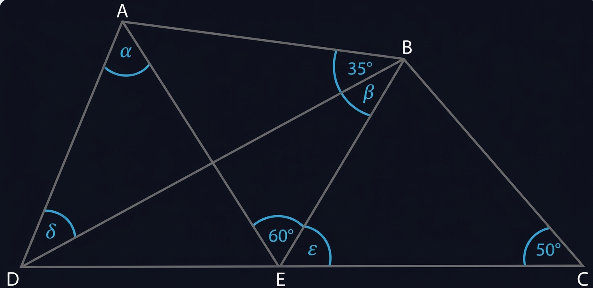
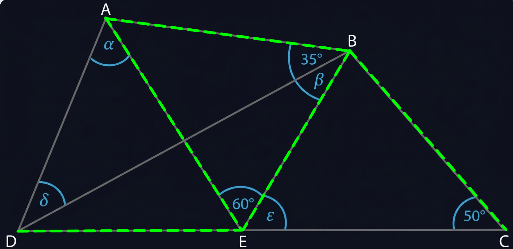
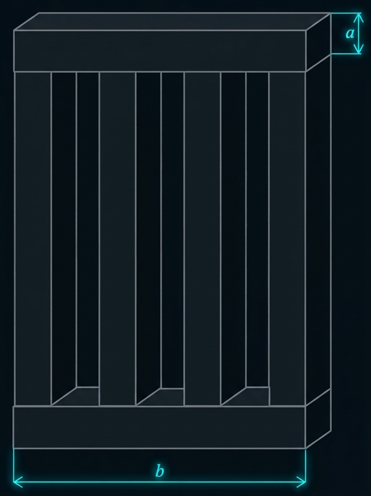

Egy zsinórt három részre vágtunk. Az első levágott darab a zsinór eredeti hossza harmadánál 26 cm-rel rövidebb. A második levágott darab a zsinór eredeti hossza negyedénél 6 cm-rel rövidebb. A két darab levágása után a maradék zsinór hosszúsága a zsinór eredeti hossza felénél 30 cm-rel rövidebb lett.
a) Hány cm volt a zsinór eredeti hossza? Írd le a számolás menetét is!
A zsinór eredeti hossza ………………… cm.
A feladat megoldása lépésről lépésre:
Az alábbi ábrán vázolt ABCD négyszög CD oldalán úgy helyezkedik el az E pont, hogy BC = AB = AE = BE = DE.
Az ábrán három szög nagyságát megadtuk. (Az ábra csak tájékoztató jellegű vázlat, nem pontos méretű.)

Szemléltető ábra az egyenlő szakaszokkal:

Minden kérdés után kattints az egyetlen helyes válasz betűjelére!
a) Egy tó felszínén gyorsan szaporodtak az algák. Minden nap estére negyedakkora területtel nőtt az algával borított terület nagysága, mint amekkora előző nap este volt. Ma estére teljesen befedte az alga a tavat. Hány százalékát fedte alga tegnap este a tó felszínének?
b) Hány átlója van egy szabályos hétszögnek?
c) Mennyi a 120 és a 186 legnagyobb közös osztója?
Hat darab egybevágó négyzet alapú hasáb összeragasztásával hoztuk létre az ábrán látható testet. A függőleges oszlopok azonos távolságra vannak egymástól.
Az összeragasztott test leghosszabb éle 20 cm, legrövidebb éle 2 cm. (Az ábra csak tájékoztató jellegű vázlat, nem pontos méretű.)

a-b) Hány cm hosszúak a négyzetes hasáb élei?
A négyzet alapú hasáb alapéle: ...... cm
A négyzet alapú hasáb oldaléle (hossza): ...... cm
c) Hány cm² az összeragasztott test felszíne? Írd le a számolás menetét is!
Az összeragasztott test felszíne: ............ cm²
Tibi 2021-ben (tehát öt éve) ötször idősebb volt, mint az unokaöccse volt akkor. Három év múlva, 2029-ben Tibi már csak háromszor annyi idős lesz, mint amennyi az unokaöccse lesz akkor.
a) Hány éves Tibi most, 2026-ban? Írd le a számolás menetét is!
Tibi most ........... éves.
A feladat megoldása lépésről lépésre: